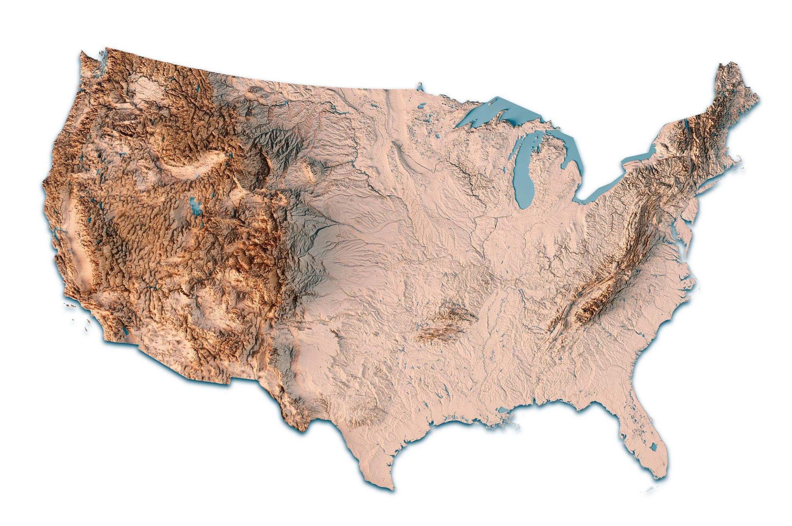
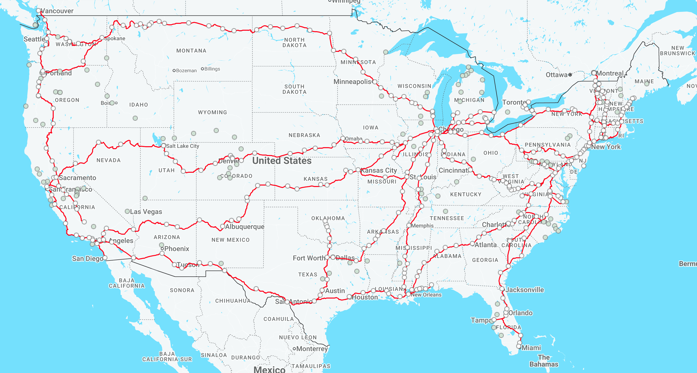
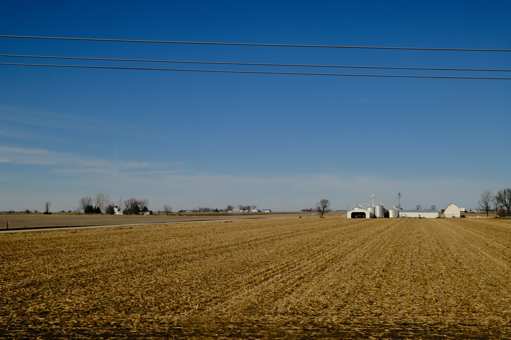
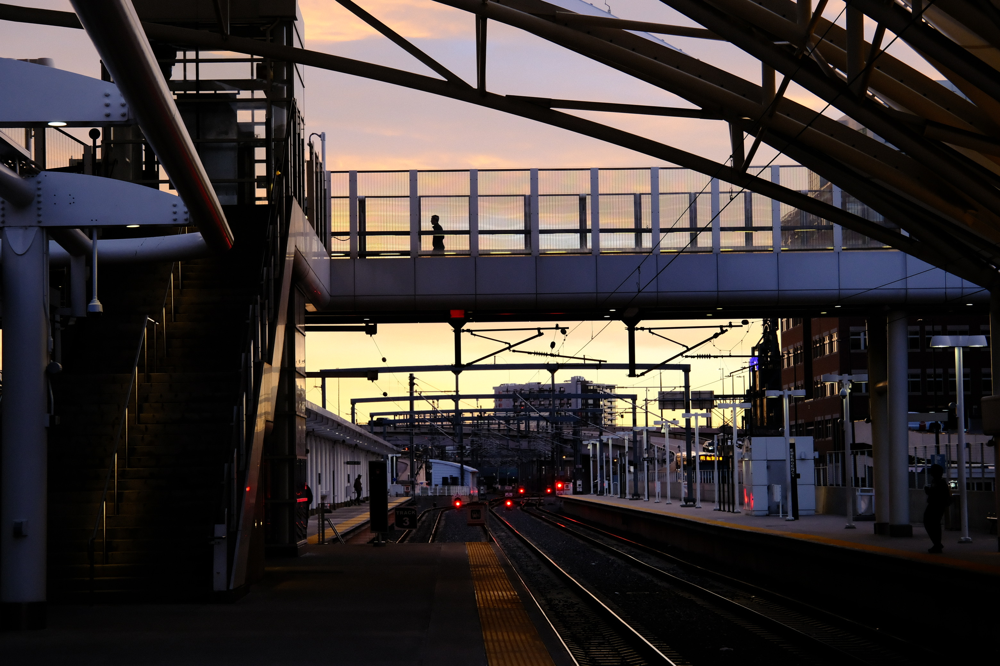
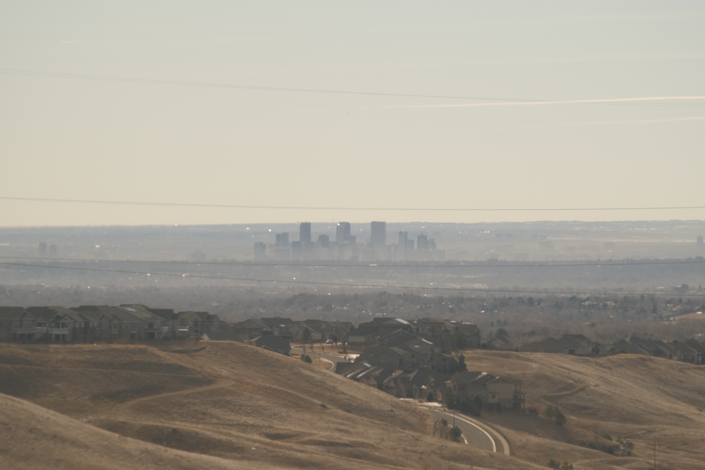
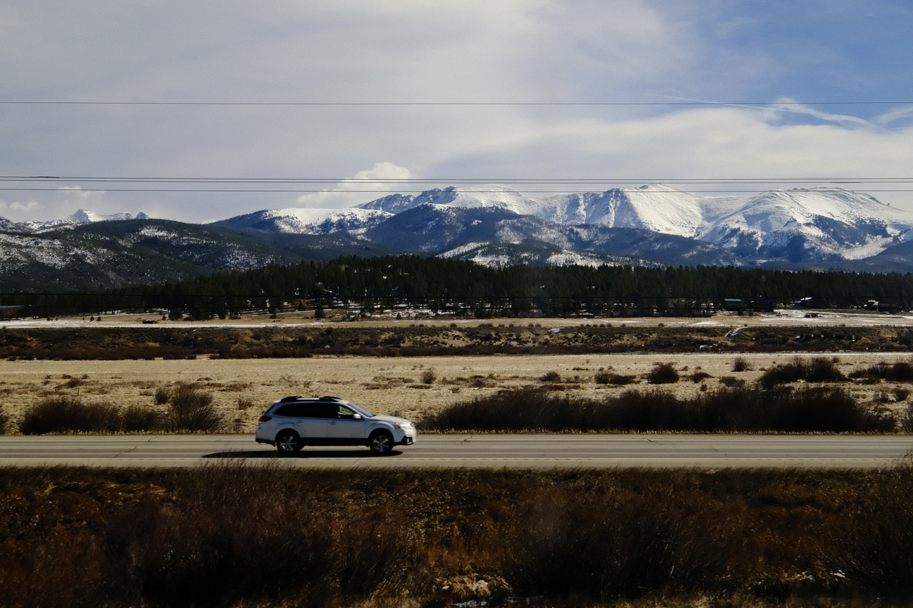
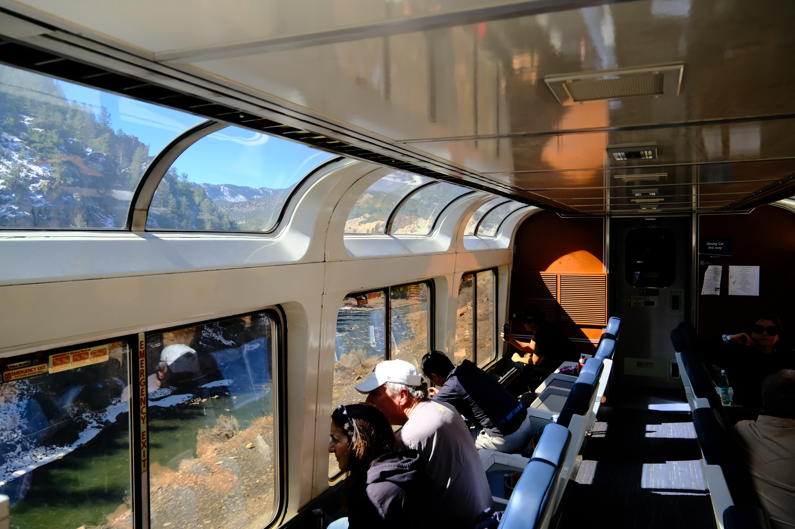
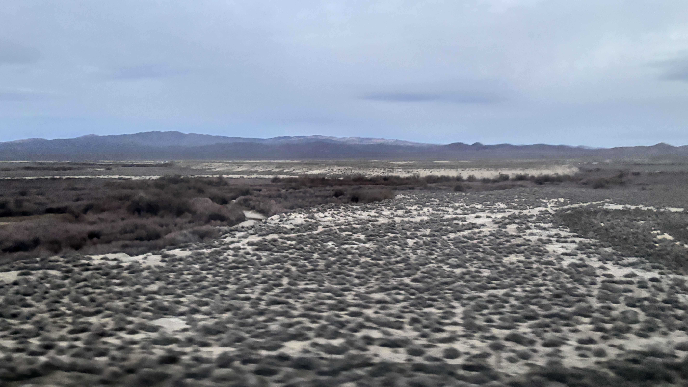
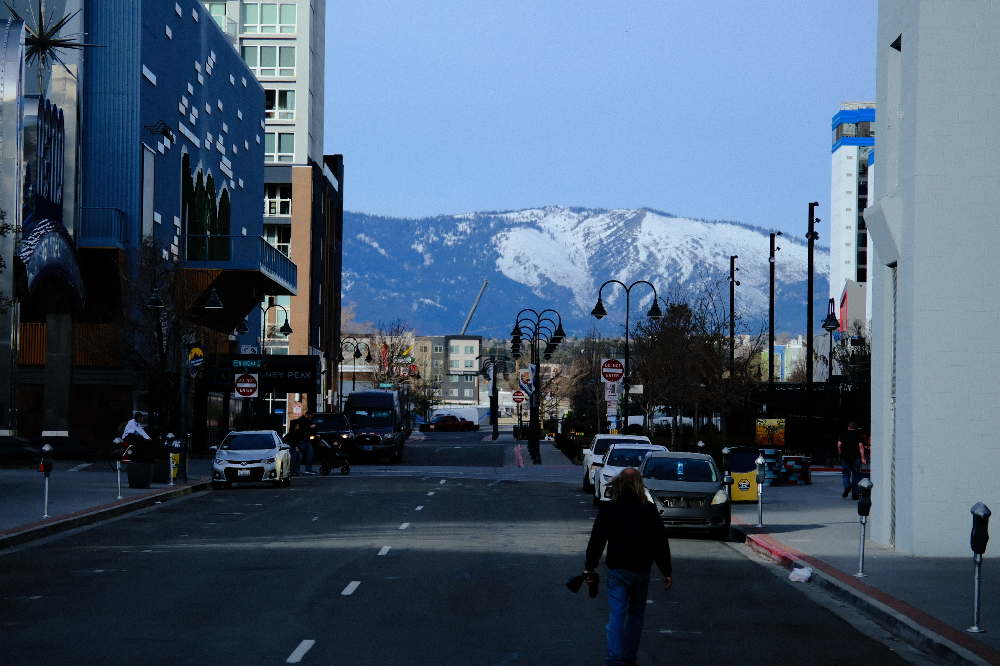
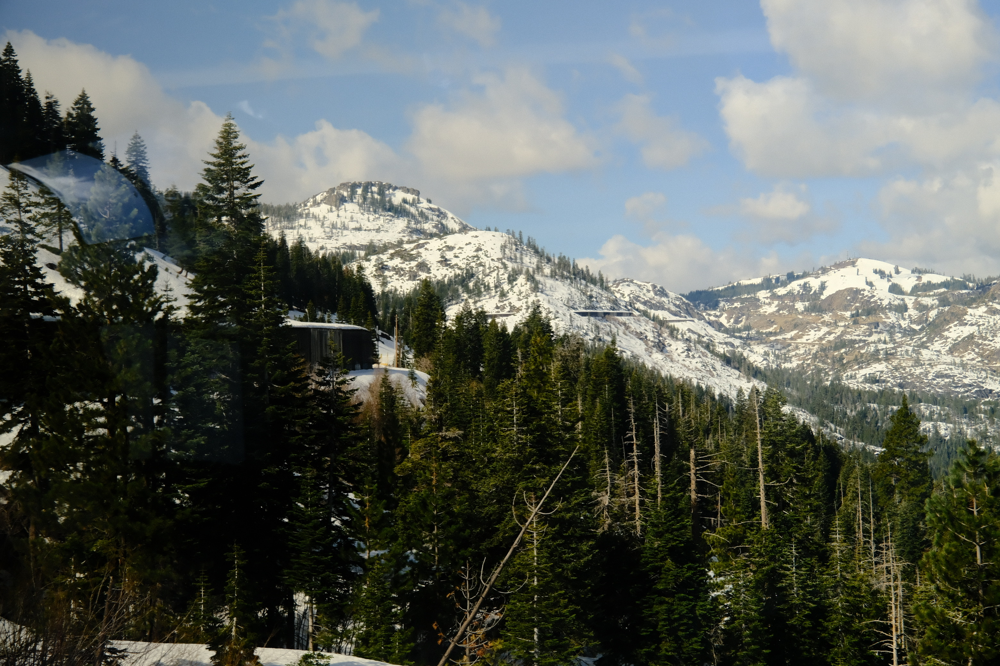

加州和风号：一部流动的美国地理课
在地图上出发
如果把美国摊开来看，它更像一块被时间雕刻过的浮雕，而不是一张平面的地图。从东海岸到西海岸，这片大陆几乎以一种近乎教科书式的方式展开：最东侧是起伏温和的阿巴拉契亚山脉，再往西，是一片广阔、几乎没有遮挡的中央大平原；继续向西，地势突然抬升，进入落基山脉的高地系统，山脊与高原交错；再往西，是干燥的内陆盆地与荒漠；直到最后，地形再次隆起，在内华达山脉之后骤然跌入太平洋。这不是偶然的排列，而是一种地质历史的叠加：古老的东部山脉、后来形成的内陆沉积盆地，以及仍然“年轻”的西部造山带，共同构成了一条从稳定到剧烈、从湿润到干燥的空间梯度。
而一列名为加州和风号（California Zephyr）的火车，正沿着这条地理梯度展开它的行程：从中西部大平原与五大湖交汇处的枢纽城市芝加哥出发，一路向西，驶向旧金山，横穿美国西部最富层次与变化的地貌。 2026年3月8日，我登上这趟全程约52小时的列车，完成了这次横贯大陆的旅程。
{kind=link}

美国地形图
如果说地图是静止的知识，那么这趟火车提供的是一种移动中的理解——我们不是在学习美国的地理，而是在穿越它的形成过程。
芝加哥：西方小武汉
芝加哥并不位于美国的地理中心，却长期占据着这个国家铁路网络的“结构中心”。从我们中国人的视角来看，芝加哥就是美国人的武汉，几乎承载着整个国家交通体系的运转逻辑。如果把美国的铁路系统摊开来看，它更像一张向西展开的网，而芝加哥正处在这张网最关键的收束点上。来自纽约、波士顿等东海岸城市的线路在这里汇聚，再向西分流至大平原、落基山脉乃至更远的太平洋沿岸。几乎所有横贯美国的铁路干线，无论是历史上的还是今天仍在运行的，都无法绕开芝加哥。
{kind=link}

美铁线路运行图
大平原：看不见的变化开始发生
城市的边缘很快退去，取而代之的是一片几乎没有尽头的平坦地面。视线所及之处，很少有起伏，也很少有遮挡。天空与土地之间，像被一条直线干净地分开。加州和风号在这样的地形上行驶，仿佛不再“穿越空间”，而是在一块展开的背景板上缓缓滑动。这就是美国的大平原，也是在中文互联网中常被戏称为“玉米地”的地方。从伊利诺伊、爱荷华，到内布拉斯加、堪萨斯，这片看似单调的土地，构成了世界上最重要的农业带之一。肥沃的土壤与几乎没有起伏的地形，使大规模机械化耕作成为可能。但同样的地理结构，也带来了另一面。夹在落基山脉与阿巴拉契亚山脉之间，这里成为南北气流贯通的通道，仿佛一条横贯大陆的“风廊”，容易形成我们口中的“穿堂风”。暖湿与寒冷在此相遇、碰撞，使这片农田同时也是美国强对流天气和龙卷风最活跃的区域之一。
{kind=link}

伊利诺伊州的玉米地
大平原因此不只是一个自然地理单元，更是一段国家扩张史的舞台——在这里，农业、铁路与移民共同塑造了美国向西展开的路径。
列车于下午从芝加哥驶出，夜晚抵达奥马哈——这座内布拉斯加州最大的城市，也是沃伦·巴菲特长期生活与投资的地方。夜色中列车继续向西，直到第二天清晨，抵达科罗拉多州首府丹佛；而加州和风号最具代表性的路段，也将在此之后徐徐展开。
丹佛：地形开始抬升的地方
在大平原上行驶了很久之后，你会开始怀疑，地形是否还会发生变化。 然而变化几乎是在不经意间出现的：地平线不再笔直，而是微微起伏；远处的轮廓也从模糊的蓝色，逐渐凝成清晰的山脊。落基山脉并不是突然“拔地而起”，而是以一种缓慢而坚定的方式，逐渐占据视野。{kind=link}

列车在第二天清晨驶进丹佛
历史上，丹佛的兴起始于十九世纪中叶的淘金热。当矿产资源吸引人群进入山地之后，这里逐渐成为物资集散与交通转运的中心。铁路的到来进一步巩固了这一地位——它不仅把山里的资源运出来，也把外部的资本与人口引入高地。某种意义上，丹佛之所以成为城市，正是因为它处在“进入西部”的门槛上。
对于加州和风号来说，这里既是补给与停靠的站点，也是地理意义上的分界线——从这里开始，列车将真正进入山地系统。

列车从丹佛驶出
{kind=link}

爬升途中远眺丹佛
{kind=link}

落基山脉东部的针叶林
大陆分水岭：水流改变方向的地方
当列车继续向山中深入时，地形的变化也显得渐进而克制。但这一次，分界线以另一种方式出现了。列车驶入一段长约10公里的莫法特隧道（Moffat Tunnel）。当它从另一侧驶出时，风景似乎并没有立刻发生变化。 但水流的方向，已经改变了：向东，雨水最终汇入密西西比河，流向大西洋；向西，则进入科罗拉多河体系，穿越干旱高原，最终抵达太平洋。在这一刻，空间的意义不再只是高度与距离，而是方向——一种由重力与地形共同决定的方向。与此同时，列车也将顺着发源于分水岭的科罗拉多河，一同走完在科罗拉多州内的旅程。
{kind=link}

列车沿着科罗拉多河行进

科罗拉多高山牧场
再向西，颜色开始发生变化。土壤与岩石逐渐转为红褐色，植被变得稀疏，峡谷与峭壁开始主导视野。列车沿着河谷穿行，轨道贴近岩壁，时而进入阴影，时而暴露在强烈的阳光之下。这一带属于科罗拉多高原的边缘地带。这里的岩石多为沉积岩，在干燥气候下暴露于地表，经过长期风化与氧化，呈现出鲜明的红色。与此同时，科罗拉多河及其支流在漫长的地质时间中不断下切，雕刻出这些峡谷与断壁。 与大平原的“平整”不同，这里的地形更像是一种被时间切割后的结构。它不再铺展，而是层层叠加；不再连续，而是被河流与岩壁分割成片段。

红宝石峡谷
如果说在分水岭以西，水流只是改变了方向，那么在更远的内陆，它开始失去去向。
与之前由河流切割出的峡谷不同，这里的地形更像是被时间缓慢侵蚀后的残留：平顶的台地、松散的坡面，以及几乎没有尽头的空旷。

犹他州东部的侵蚀台地
直到第二天清晨。
大盆地：水流不再抵达海洋的地方
所谓大盆地（Great Basin），一个由群山环绕的封闭空间。河流在这里诞生、流动，却无法抵达海洋，只能在盐湖与湿地中逐渐消失。窗外的景象依然带着某种“月球表面”的质感：灰白的土地、低矮而稀疏的灌木，以及几乎没有变化的地形。这里属于大盆地的核心区域，一个由群山围合而成的内流空间。水在这里不会流向海洋，而是在蒸发中消失，留下盐分与干燥的土壤。{kind=link}

清晨起来看到的大盆地
正是在这样的空间之中，里诺出现了。
这座位于内华达州西缘的城市，并不宏大，却占据着一个关键的位置：它位于大盆地的边界，同时也是进入内华达山脉（Sierra Nevada）之前的最后一个重要节点。与此前的盐湖城类似，里诺的存在并非偶然,在一片缺乏水系与农业支撑的土地上，城市往往依赖交通而生。
{kind=link}

里诺车站外随拍
内华达山脉：最后一道屏障
在穿越了大盆地中几乎没有尽头的平坦之后，山脉以一种更为明确的方式重新出现。内华达山脉与此前的落基山脉不同。它更像是一整块被抬升起来的地壳，东侧陡峭，西侧相对平缓。列车正是从它更为陡直的一侧逼近，因此这种“抬升”显得尤为突兀：在几乎没有过渡的情况下，地形迅速从平坦转为高耸。这种结构不仅改变了视觉上的体验，也决定了更大尺度的气候格局。来自太平洋的湿润气流在山脉西侧被抬升、冷却，形成降水；而越过山脉之后，空气变得干燥，大盆地由此长期处于缺水状态。可以说，内华达山脉不仅是一道地形上的屏障，也是一道气候的分界线。
{kind=link}

列车翻阅内华达山脉
正是在这一段线路的修建中，大量华工参与了中央太平洋铁路（Central Pacific Railroad）的建设，在高海拔与严寒环境中完成了最艰难的工程部分。
在跨越了这道山脉之后，旅程的方向，终于开始转向太平洋。